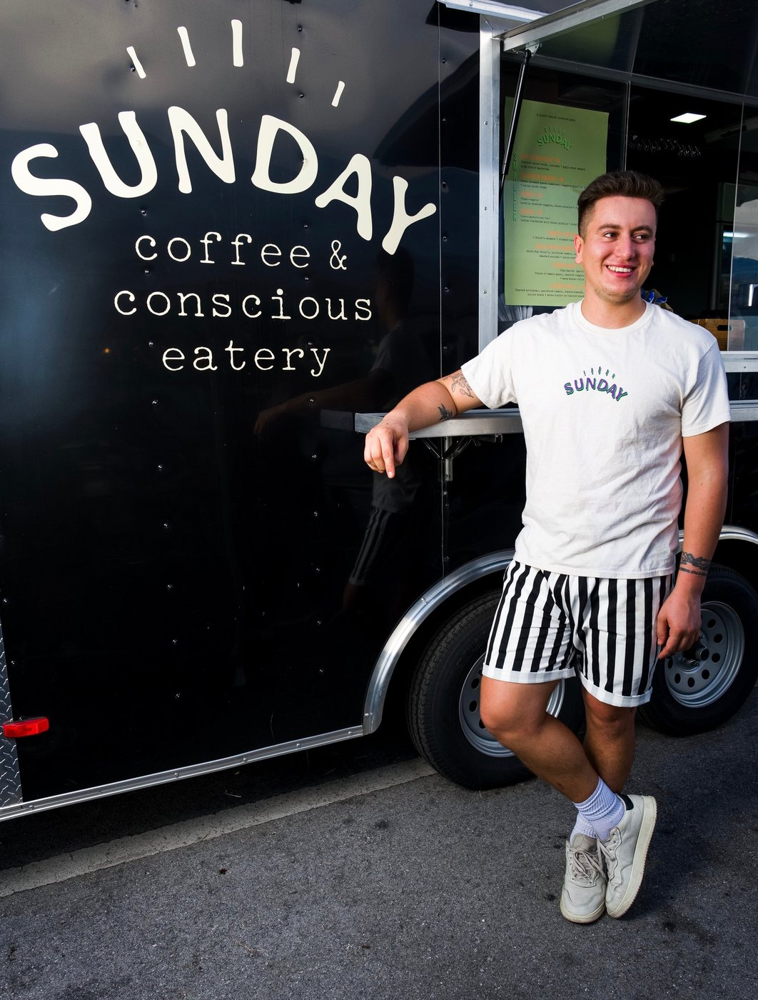
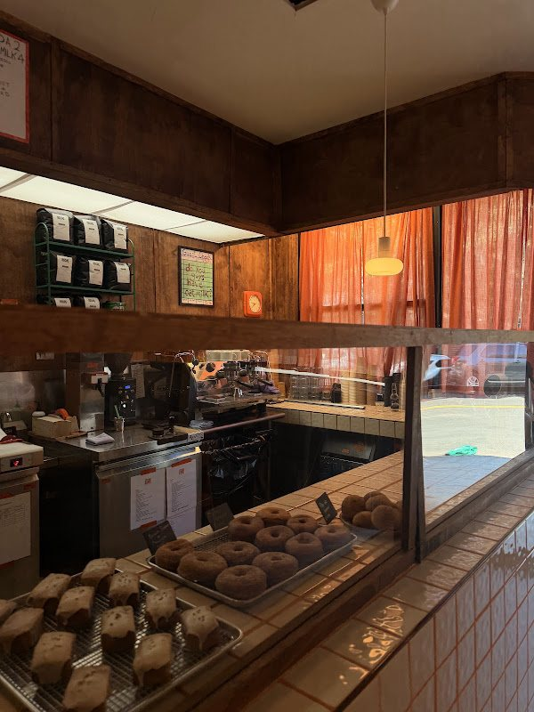

A LITTLE BACKSTORY
SUNDAY IS
A FEELING.
Owner and chef Christian Torres started with a little food-truck dream in Miami. The idea was to bring the best parts of a slow Sunday—something baking, good music, time to gather—into what gets served and how folks are welcomed.
Now that feeling has a Bushwick home: a neighborhood café for coffee, bakes, and the savory little things. The menu shifts with the season, so today’s favorites may not be tomorrow’s.
Follow the Sunday feeling